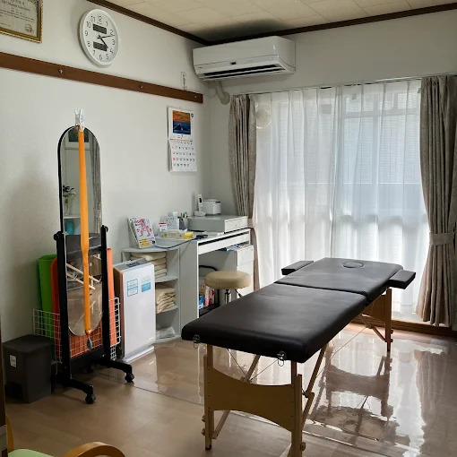
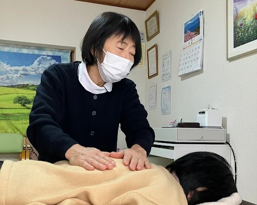
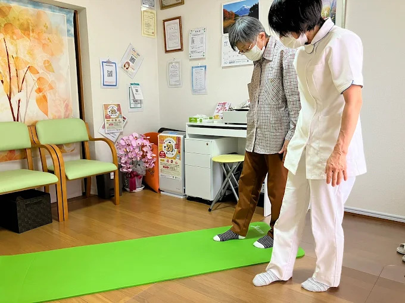
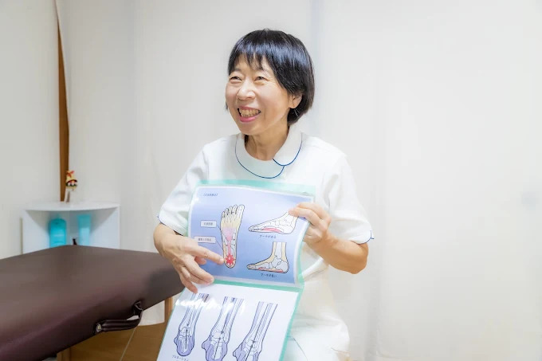
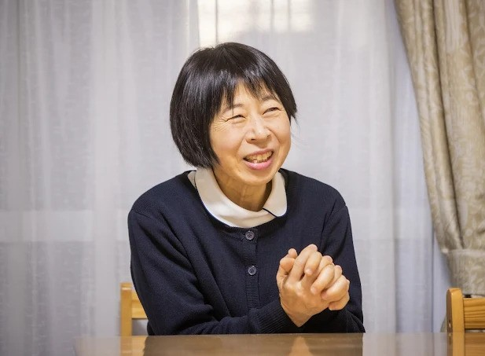

外反母趾・扁平足・足底腱膜炎・O脚などの
お悩みに。
正看護師が院長を務める足の専門整体院です。

静岡 足の整体院は、外反母趾・扁平足・足底腱膜炎・O脚・膝痛など、足のお悩みに特化した整体院です。
身体の土台である足に着目し、足元のバランスから全身を見直すことで、快適な毎日をサポートしています。
完全予約制の落ち着いた空間で、一人ひとりのお悩みに丁寧に向き合います。
そのお悩み、
当院にお任せください！
根本的な改善を目指すために、
私たちが大切にしていること。



トライアルコースをご予約の方は、
以下の内容をご確認ください。

足は身体を支える大切な土台です。
だからこそ、痛みがある部分だけではなく、足元から身体全体を見直すことを大切にしています。
お一人おひとりのお悩みに寄り添いながら、安心して通っていただける整体院を目指しています。